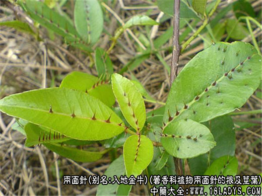
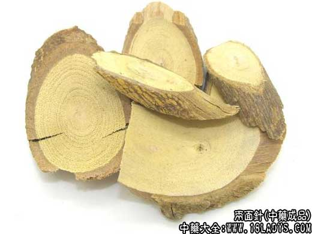

原文出处:本文转载自中药大全网。
原文连接:https://www.daquan.com/post/2417.html
原文连接:https://www.daquan.com/post/2417.html



来源：出自《本草求原》。原名入地金牛。为芸香科植物两面针的根及茎叶。
主产：主产广东、广西、福建、台湾、云南、四川等地。全年可采，鲜用，或切片晒干用。
别名：入地金牛，金牛公，蔓椒，豕椒，猪椒，彘椒，狗椒，豨椒，金椒，山椒，花椒刺，胡椒竻，出山虎，入山虎，上山虎，下山虎，入地虎，红心刺刁根，红倒钩簕，两背针，两边针，双面针，双面刺，叶下穿针，大叶猫枝簕。
商品名：两面针，入地金牛。根以肥壮、坚实、粉性足、嚼之味苦而有麻舌感者为佳。茎叶以质嫩、洁净者为佳。
处方名：两面针，双面针，双面刺，两背针，入地金牛。
性味：辛、苦，温，有小毒。
归经：归肝、胃经。
功效与作用：祛风，通络，消肿，止痛。
主治：风湿性关节痛，跌打肿痛，腰肌劳损，胃痛，牙痛，咽喉肿痛，毒蛇咬伤，烫火伤，颈淋巴结结核。
用量： 6～9克。外用适量。
忌：孕妇慎服。